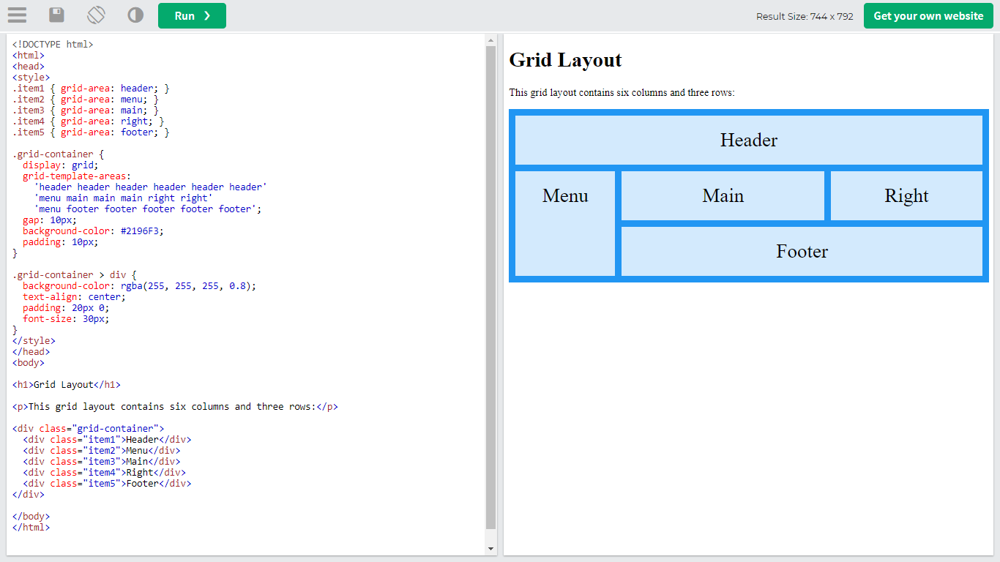

CSS GRID LAYOUT
CSS Grid layout contiene funciones de diseño dirigidas a los desarrolladores de aplicaciones web. El CSS grid se puede utilizar para lograr muchos diseños diferentes. También se destaca por permitir dividir una página en áreas o regiones principales, por definir la relación en términos de tamaño, posición y capas entre partes de un control construido a partir de primitivas HTML.
Al igual que las tablas, el grid layout permite a un autor alinear elementos en columnas y filas. Sin embargo, con CSS grid son posibles muchos más diseños y de forma más sencilla que con las tablas. Por ejemplo, los elementos secundarios de un contenedor de cuadrícula podrían posicionarse para que se solapen y se superpongan, de forma similar a los elementos posicionados en CSS.
EJEMPLO SENCILLO
El siguiente ejemplo muestra un grid de tres columnas con filas nuevas creadas con un mínimo de 100 píxeles y un máximo automático. Los elementos se han colocado en el grid utilizando posicionamiento en línea.
Ejemplo tomado de W3School click en el enlace para visitar el sitio